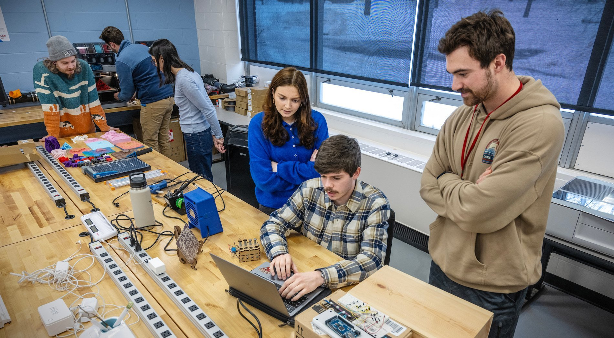
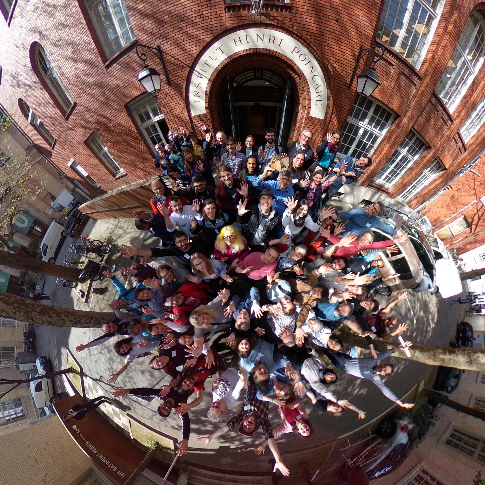
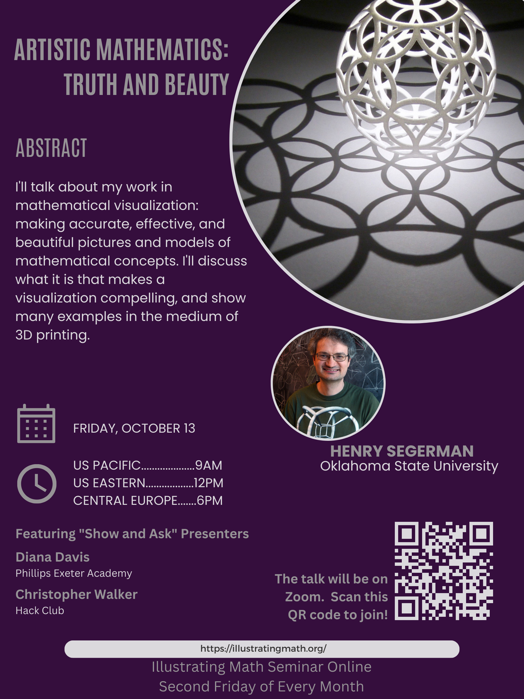
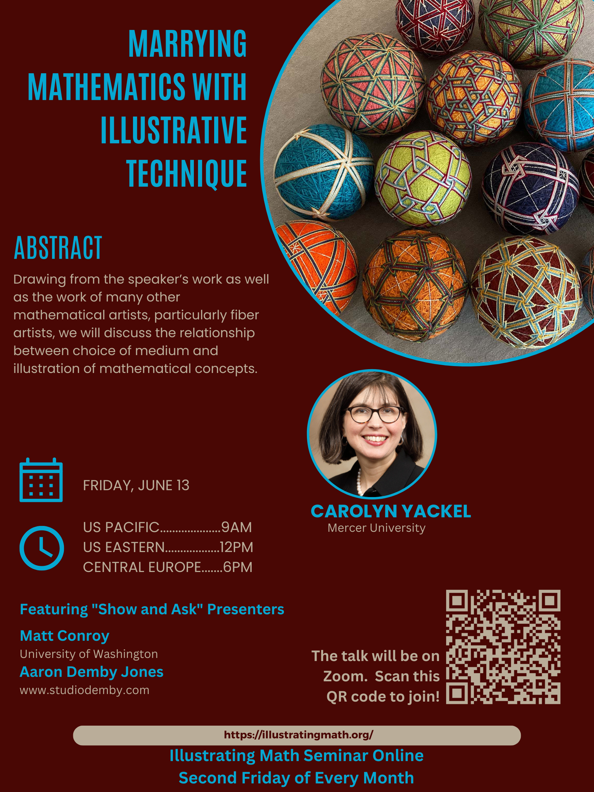
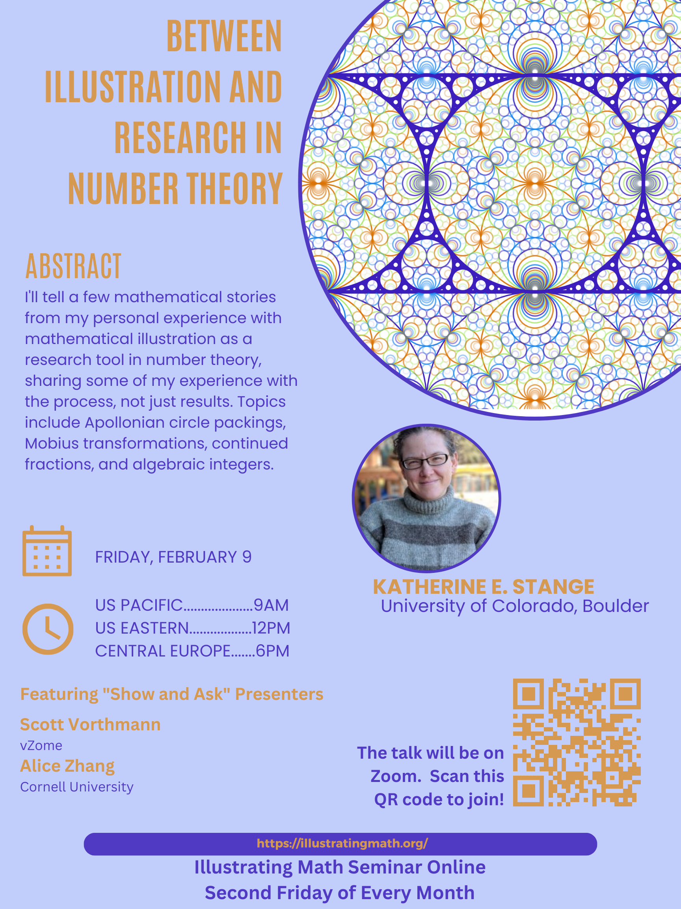
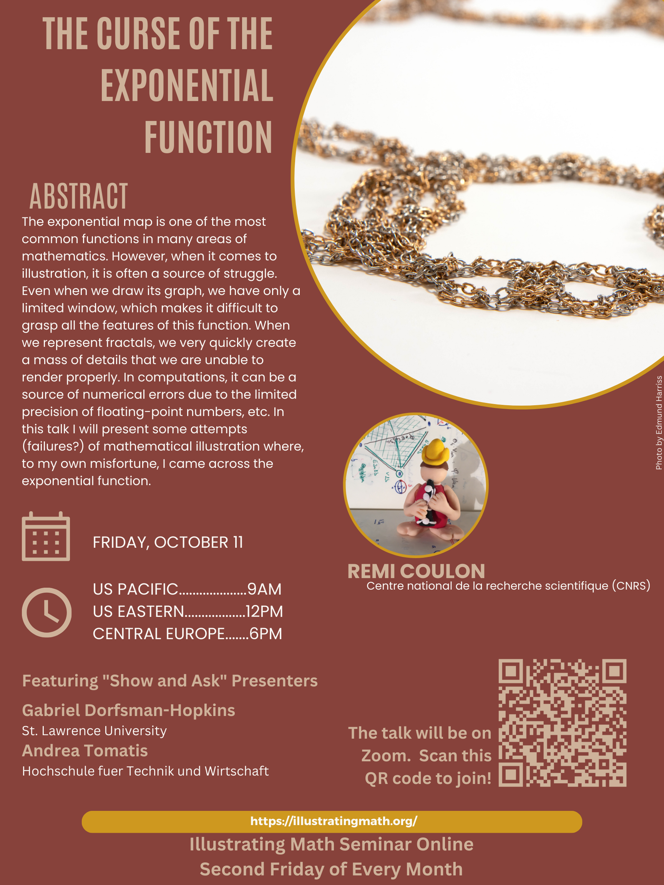

Initiatives
I work to build communities that bring together mathematicians, artists, educators, and students around visualization, illustration, and computation. This work includes organizing research programs, founding interdisciplinary initiatives, running international seminars, and securing external funding to support collaborative mathematical practice.
Explore Lab Makerspace (2024-present)

Together with Kevin Angstadt, I co-founded the Explore Lab, an interdisciplinary makerspace where students and faculty use digital fabrication, electronics, computation, and visualization to explore mathematics, art, and science. The space supports research collaborations, classroom innovation, artistic practice, and independent student projects, while providing a shared home for experimentation across disciplines.
The Explore Lab hosts class visits, drop-in hours, research projects, and commissioned fabrication work. You can find our website here.
Illustration as a Mathematical Research Technique(2026)

A spherical selfie taken during the trimester. Photo Credit: Henry Segerman.

Illustration as a Mathematical Research Technique was a three-month research program held at the Institut Henri Poincaré in Paris. As one of the organizers, I helped bring together nearly 250 mathematicians, artists, educators, and students to explore visualization and illustration as genuine tools for mathematical research.
The main website for the program can be found here.
Illustrating Math Seminar Online (2023-present)




The Illustrating Mathematics Seminar Online (IMSO) is a monthly international research seminar devoted to mathematical illustration, visualization, and communication. Co-organized with Aaron Abrams, the seminar brings together researchers, artists, educators, and students from around the world and has become a sustained meeting place for the growing illustration community.
Look here, for more info and too see an archive of past talks. We also have a YouTube channel.
Grant Support
Matheneum Foundation: Mathematical Illustration Apprenticeships (PI)
This grant supported an illustration apprenticeship program associated with the trimester program described above. We used this funding to support graduate students and early career researchers in attending the trimester program, connecting them with mentors from our senior research team.
Simons Foundation and American Mathematical Society: Research Enhancement Grants for PUI Faculty (PI)
This research enhancement grant supports various aspects of my research program, including my travel to Paris for the semester program described above, and materials for the Explore Lab makerspace. The grant program website can be found here.
Conference Organization
- Rigorous Illustrations - Their creation and evaluation for mathematical research (2026)
- Institute Henri Poincaré, Paris
- Interdisciplinary conference on the notion of rigor in an illustration including artists, scientific illustrators, data scientists, mathematicians, and more.
- Derived Categories and Arithmetic (2024)
- 2024 Joint Mathematics Meetings, San Francisco
- Special session showcasing the results of an American Mathematical Society - Mathematical Research Community (AMS-MRC)
- Construct 3D (2023)
- NYU Tandon, Brooklyn
- Conference on 3D printing and digital fabrication in education.
- Illustrating Math @ PCMI (2021)
- Parks City Mathematics Institute, Utah
- A summer school for graduate students studying techniques in mathematical illustration.